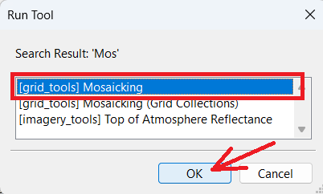
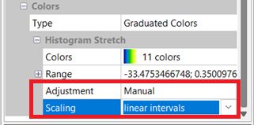
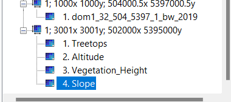
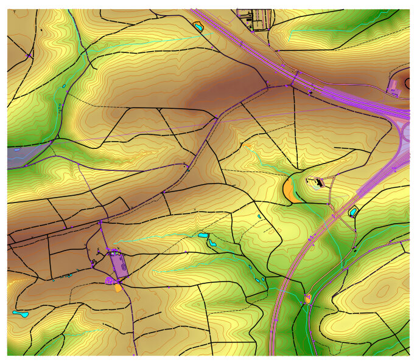
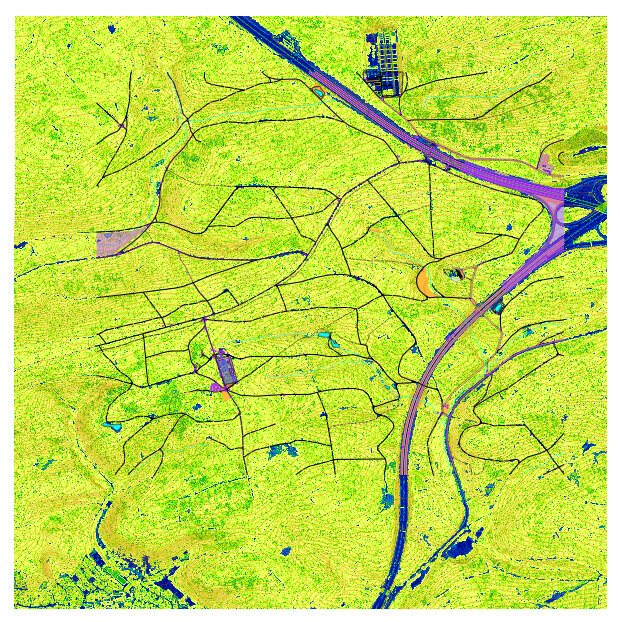
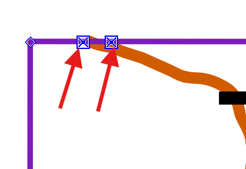
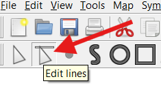
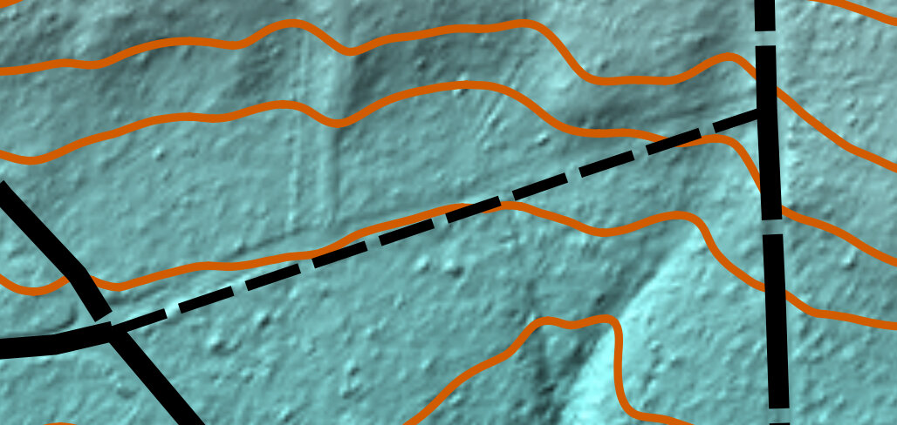
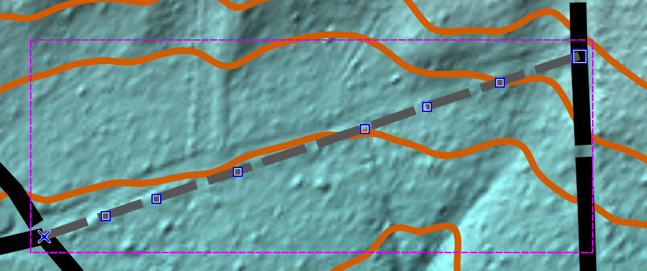
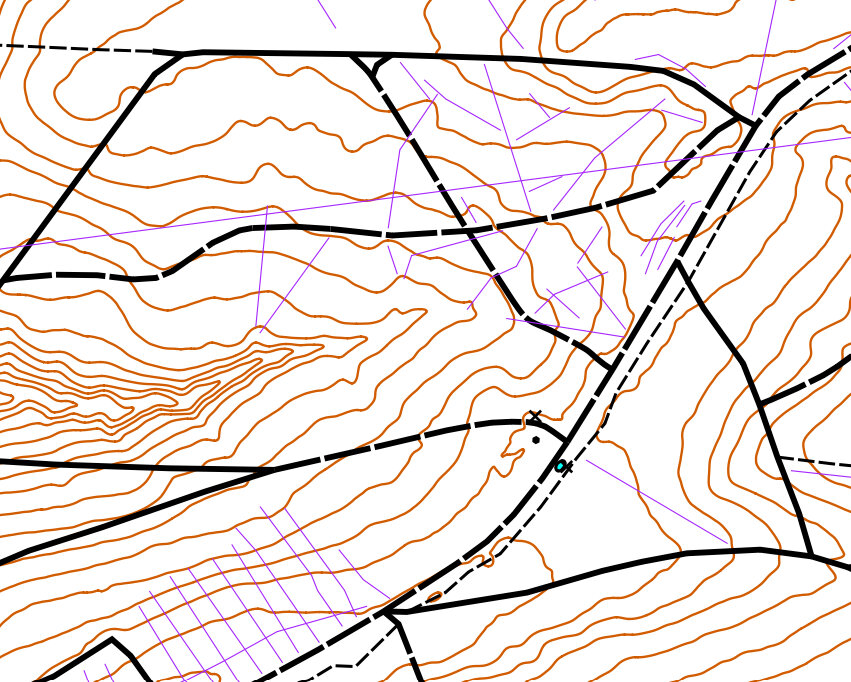

1. Acknowledgment & Overview
Acknowledgment: Almost all of section 2 of this guide is taken from a PDF file "Creating Base Map Templates in OOM from LiDAR and other Sources" (link) from the British Orienteering webpage (all I changed was the sequence of some steps). They also have some interesting webinars posted complete with lesson materials.
Brief Overview: Determine your park boundaries, download applicable data and process it, then create and update a map using OpenOrienteering mapper. When the time comes and you want to run an event, you'll need to make some final adjustments and crop your map, and you may use another program to do this and to produce the course files.
Disclaimer: Some of the things that worked for me, may not apply to your map. I take responsibility for any errors in this document.
Requirements: This tutorial uses the following programs:
- SAGA GIS
- OpenOrienteering Mapper
- PurplePen
2. Download & Process Data
In this second section, we determine the north/south and east/west boundaries for your map, download data, and process it. In the next (third) section we will bring it into OpenOrienteering Mapper and make edits.
NOTE: In these instructions, the word 'mosaic', 'image' and 'template' is used interchangeably, for two reasons. Firstly, in SAGA we will create "mosaics" by joining LIDAR tiles together, then exporting them as single PNG image file. Secondly, in OpenOrienteering Mapper, when we want to load a file as an uneditable image we will load it as a "template".
2.1 Download OSM data
- Create a new folder on your computer and rename it the name of your map. For this example we'll call the folder "Park".
- Open https://www.openstreetmap.org.
- Zoom in on the area you want to map.
- Click the "Export" tab at top.
- Click the "Manually select a different area" link beneath the export coordinates.
- Adjust the rectangle so that it fits the area you want to map.
- Create a new text file in the "Park" folder called "Notes.txt". Copy the top, bottom, left and right coordinates to the file, labeling it 'OSM range (degrees)'.
- Use the internet (i.e., https://www.latlong.net/lat-long-utm.html) to convert the south west and north east points from decimal degrees to UTM.
- Type the converted UTM range into the "Notes.txt" file.
- Return to the OSM window, and click the blue "Export" button, and save the OSM file to the map folder, "Park".
- Reload the export tab if you need to download additional sections to your folder.
- You should now have one or more *.OSM files along with the Notes.txt file in a folder on your computer, named after the name of your map or "Park" in our case.
We will begin by determining where our map will be, and downloading the OSM data.
It is simplest to determine the rough boundary of your map at the very beginning using OpenStreetMap because you can write down the left, right, top, and bottom boundaries. It makes downloading data much easier. Additionally, if you need to expand the map later on, you can simply export a new small area outlining only the new section you want to add, rather than having to download the entirety of the larger map.
NOTE: You will need to download OSM and LIDAR data for your map. The larger these data sets, the more processing power your computer will need, and the longer it will take to process (from minutes to hours). Therefore, it is recommended to select a smaller map range for your first map. If you want to expand the map later on, it can be done and is not too much trouble.
- OSM range (degrees): north 48.71413 to 48.73247, east 9.03283 to 9.06501
- OSM range (UTM): north 5395678 to 5397718, east 502415 to 504780
NOTE: If the OSM export area is too large or contains more than 50000 data points (frequently the case when trying to download urban areas), it will produce an error message "You requested too many nodes (limit is 50000). Either request a smaller area, or use planet.osm". The best way to overcome this error message, is to export it in smaller chunks, then connect the parts later on. It helps to write down the coordinates of your intended download, because you'll have to reload the window and re-enter the dimensions to download more sections.
In the below example, we have arbitrarily divided the area into two sections, which we would download in two separate files. Just type the coordinates in the webpage and let it automatically adjust the box size - it is more accurate than using the mouse to adjust the box size.
- OSM download 1 (degrees): north 48.71413 to 48.72000, east 9.03283 to 9.06501
- OSM download 2 (degrees): north 48.72000 to 48.73247, east 9.03283 to 9.06501
2.2 Download LIDAR data
- Create a sub-directory in the "Park" folder, and label it "geodata".
- Open https://opengeodata.lgl-bw.de/#/ and click "zum Portal".
- Zoom in on the area you want to map.
- Scroll down and click on "Digitales Oberflächenmodell (DOM1)".
- Select which grids mark the area you intend to map.
- Make a note of the filename numbers of the areas you selected. Each number represents the southwest coordinates of the area contained in each file. (The coordinates here are in UTM/meters not degrees.) The first three digits represents east/west km, and the last four digits represents north/south km. If you move the mouse over the map and look at the bottom-right of the window, it indicates the cursor location in UTM coordinates. By comparing the two, we can see that each box contains roughly four square kilometers of points (2km x 2km). For example, the file 501-5396 contains data from east 501000 to 502999, and from north 5396000 to 5397999.
- Write down the filenames (four in our example) in the "Notes.txt" file.
- OPTIONAL. Write down the overall range of the selected DOM data (which may be hard to do if your area is not rectangular shaped). Writing down the numbers is helpful to understand the size of the area we are downloading, and will help us to delete unnecessary files later.
- Click the "Herunterladen" button to download the files.
- Move all these zip files from downloads to the "geodata" folder.
- Right click on each zip file and select "Extract All" and extract them to that same "geodata" folder.
- Delete the zip files.
- Search for "*.tif" files in your geodata directory.
- Select all the found TIF files and "move" them to the "geodata" folder.
- Delete the remaining folders. All we want to keep are the TIF files.
- In our example, we are left with 16 TIF files.
- Return to https://opengeodata.lgl-bw.de/#/.
- Zoom in on the same area we want to map.
- Scroll down to and click on "Digitales Geländemodell (DGM025)".
- Follow the same steps above for the DGM025 data as we did earlier for the DOM1 data. Download and extract the files, and move the TIF files to the geodata folder, removing the leftover extracted folders and anything else inside them.
- In the geodata folder of our example, we have now 32 LIDAR files (16 DOM1 and 16 DGM025 files).
- OPTIONAL. To save processing time, we could compare the LIDAR files we've downloaded with the UTM range we wrote down earlier, and delete any files that are outside of that range. For example, we could delete the eight TIF files labeled 501-XXXX because our map only goes as west (low) as 502,415. Similarly, we could delete the eight TIF files labeled XXX-5394 because our map only goes as south (low) as 5395,678. Those together constitute 14 unnecessary files. If you are concerned about saving time and disk space, go ahead and delete any unnecessary files at this point, otherwise you can always crop your map later on. For the sake of demonstration, we will delete them.
- For our demonstration, 18 LIDAR files (consuming 385MB disk size) now remain in our geodata folder.
We will download two types of LIDAR data, in no particular order:
- Digitales Oberflächenmodell (DOM) / First Return / Treetop Elevation / Digital Surface Model (DSM)
- Digitales Geländemodell (DGM) / Last Return / Ground Elevation / Digital Terrain Model (DTM)
NOTE: Some LIDAR data is stored in a 'point cloud' format, usually LAZ, LAS, or XYZ files. Other data comes in GeoTIFF (TIF) format. We will use TIF format for the bulk of these instructions because the PDF file from British Orienteering uses that format, and Baden-Württemberg data is available in that format. If the below website doesn't work for your mapping needs, visit https://www.opendem.info/opendtm_de.html to see if there are other ways to access or process free data in your area.
- DOM files: 501-5396, 501-5394, 503-5394, 503-5396
- DOM range (UTM): north 5394000 to 5397999, east 501000 to 504999
NOTE: Another way to go about this is to, one by one, open each decompressed folder, select all the TIF files, and cut and paste them to the "geodata" folder.
NOTE: By examining the filenames, we can see that each of the four zip files we downloaded earlier contained four separate files, each containing one-square-kilometer of data.
NOTE: I would have used the DGM1 data, except those files are in XYZ format, which I would have to convert to TIF later on in order to use them in conjunction with the DOM1 files to create the vegetation_height image. Let's use the DGM025 files which are in TIF format already!
2.3 Open LIDAR in SAGA
- Open the SAGA GUI program.
- Click the Folder icon or click "File->Open" to load files.
- Open the geodata folder and select all the LIDAR data.
- Click "Open".
If you have not yet downloaded SAGA GIS, head to the link above, download it, and install it on your computer.

NOTE: When using SAGA, on the far left is the "Manager" window. We can see the LIDAR files we just loaded in this window, and any other files we've created. Right of that is the "Object Properties" window, which we will use to adjust properties of selected files. If either window is closed, simply select the "Window" menu, and re-check the option you wish to see.
NOTE: By "Processing" the LIDAR data, we will essentially be creating several new images and shapefiles from the LIDAR data, which we will later import or load-as-template into OpenOrienteering mapper. Once we're done creating these files, we will delete the geodata folder along with all the original LIDAR data files. If you need to pause and resume these steps later on, click on the "disk" icon or select "File-->Project-->Save as" to save the SAGA GUI working environment.
NOTE: If you make a mistake when editing the 'Object Properties' window, you may attempt to 'undo' your mistakes by clicking the 'x' in the top right of the window. Unfortunately, the changes will stay - all you accomplish by clicking the 'x' is to close the window (click 'Window' menu option to open the windows again). I have not yet figured out how to undo some changes made to the 'Object Properties'. Your best bet may be to remove whichever file you were working on, and restart the process from an earlier step. If any steps are hard to understand or cause problems, please inform the author so improvements can be made.
2.4 Altitude Elevation Mosaic
- Click the gear button, also known as the "Run Tool".
- In the "Search for" box type "mos" and press "Okay".
- Ensure "Mosaicking" is selected, and press "OK".
- In the Mosaicking window, click the "..." button to open the 'Grids' selection window.
- Select all the DGM025 files, then click the single ">" button to move only those files to the right.
- Click "Okay".
- Change Cellsize from 0.25 to 1.
- Change Fit from Nodes to "cells".
- Examine the quantity of columns and rows. In this example we see 3001. These numbers will have to exactly match the dimensions when we create the Treetop Elevation Mosaic in the next step.
- Write the dimensions in the Notes.txt file.
- Click "Okay". Wait for the process to complete.
- Single-click the new "Mosaic" file at the bottom of the left-hand Manager window.
- In the Object Properties window, change the Name to "Altitude".
- Press Enter twice to 'apply' the change.
- Scroll to the bottom of the Object Properties window, at Colors and select the "..." button.
- Click the color button and change it to the 11th option up from the bottom (green-yellow-brown).
- Click "Count" button, and change it to 15.
- Click "Okay" to close the Colors window.
- In the Object Properties window, click "Apply" to apply changes.
- In the Manager window, right-click the "Altitude" file and select "Save as Image".
- Label the image "Altitude".
- Select your "Park" folder (not the geodata folder), and click "Save".
- Ensure "Save Georeference" is checked. "Legend" can remain un-checked.
- Click "Okay".
- You should now have an Altitude image (PNG) and world file (PGW) in your Park folder.
NOTE: Creating the Altitude and Treetop mosaic images essentially 'stitches' together several (smaller) LIDAR tiles into a single large tile (image). We then create several intermediate template image files from these two initial mosaics. Later on some of the processing (i.e., creating a contour shapefile) can take a very long time, and it may seem as if your computer has crashed, but let it keep running! If your computer seriously cannot handle processing the quantity of data for a large map, one alternative would be to create smaller mosaics, instead of a single large one (or even skip creating a mosaic in the first place, and use the individual tiles to create multiple altitude and treetop images). However, this strategy would require a lot more work because you would have to go through the rest of the instructions for each image file. It is recommended to go through these instructions with a smaller map first.
To create our first mosaic (image), we will use the Digitales Geländemodell (DGM) / Last Return / Ground Elevation / Digital Terrain Model (DTM) data.


- DGM Mosaic: columns 3001, rows 3001


NOTE: Although we could press the 'Save' button, all it would do is offer to save the current configuration into an external file for reloading. We will use a different function 'Save as Image' to export an image file for our map.


2.5 Treetop Elevation Mosaic
- Click the gear button.
- In the "Search for" box type "mos" and press "Okay".
- Ensure "Mosaicking" is selected, and press "OK".
- In the Mosaicking window, click the "..." button to open the 'Grids' selection window.
- Click the double "<<" button to move all the files to the left-hand side.
- Select all the DOM1 files this time, then click the single ">" button to move only those files to the right.
- Click "Okay".
- Set Cellsize to 1.
- Set Fit to "cells".
- Compare the quantity of columns and rows with the previous DGM mosaic (Altitude) we entered in our notes. Mine first showed 3000 but I was able to get it to show 3001 by switching Fit to "nodes" and back to "cells" again. If that does not work for you, go ahead and edit the numbers. Alternatively, you could change the Target Grid System to "grid or grid system", then select the "Altitude" option. However you do it, the dimensions will have to be the same as Altitude, for a later step. In our example, we need the dimensions to be 3001 x 3001.
- Click "Okay". Wait for the process to complete.
- Click the new "Mosaic" file.
- In the Object Properties window, change the Name to "Treetops".
- Press Enter twice to 'apply' the change.
- Scroll to the bottom of the Object Properties window, at Colors and select the "..." button.
- Click the color button and change it to the 11th option up from the bottom (green-yellow-brown).
- Click "Count" button, and change it to 15.
- Click "Okay" to close the Colors window.
- In the Object Properties window, click "Apply" to apply changes.
- In the Manager window, right-click the "Treetops" file and select "Save as Image".
- Label the image "Treetops".
- Select the base directory of your map (Park folder), and click "Save".
- Check the "Save Georeference" box. "Legend" can remain un-checked.
- Click "Okay".
- You should now have Altitude and Treetops images (PNG) and world files (PGW) in your Park folder.
For our second mosaic (image), we will use the Digitales Oberflächenmodell (DOM) / First Return / Treetop Elevation / Digital Surface Model (DSM) data.

NOTE: Do not press the 'default' button, because it will clear the north, south, east and west values. To reload the ones that were there before, you may have to load the Mosaicking function again, switch up the source elements, or restart the instructions from an earlier step.
NOTE: Both Altitude and Mosaic must be under the same line listing the dimensions. If both mosaics are not under the same dimensions, delete/close one or both Mosaic files, and redo previous steps until you are able to get their dimensions to match.
NOTE: Although we could press the 'Save' button, all it would do is offer to save the current configuration into an external file for reloading. We will use a different function 'Save as Image' to export an image file for our map.
2.6 Vegetation Height Image
- Examine the bottom of the Manager window (on the left hand side of the SAGA GUI window). We should see both mosaics underneath the same dimensions grid, in our example they are both underneath "1; 3001x3001y; 502000x 5395000y". Because they are both underneath that line, we are good to proceed. If the two mosaics appear under different dimension lines, we will need to re-create one or both mosaics, so that both appear under the same size dimensions.
- Click the gear button.
- In the "Search for" box type "dif" and press "Okay".
- Select "Grid Difference", and press "OK".
- In the Grid Difference window, in "Grid System" select the dimensions which both mosaics are under. In our example, we've selected "1; 3001x3001y; 502000x 5395000y".
- Under "> > Minuend", select "Altitude".
- Under "> Subtrahend", select "Treetops".
- Under "< < Difference", select "create".
- Click "Okay". Wait for the process to complete.
- Click the new "Difference" file at the bottom of the left-hand Manager window.
- In the Object Properties window, change the Name to "Vegetation_Height".
- Press Enter twice to 'apply' the change.
- Scroll down in the Object Properties window, until you get to the Display section.
- Change Shading from "none" to "traditional".
- Set Azimuth to "315".
- Set Height to "45".
- Set Exaggeration to "5".
- Set Minimum to "0".
- Set Maximum to "1.8".
- Scroll to the bottom of the Object Properties window.
- Set Colors -> Type to "Graduated Colors".
- Under Colors and select the "..." button.
- Click the color button and change it to the 2nd option up from the bottom (yellow-green-blue).
- Click "Count" button, and change it to 11.
- Click the "Mirror" button.
- Click "Okay" to close the Colors window.
- Set Adjustment to "Manual"
- Set Scaling to "linear intervals".
- In the Object Properties window, click "Apply" to apply changes.
- In the Manager window, right-click the "Vegetation_Height" file and select "Save as Image".
- Label the image "Vegetation_Height".
- Select the base directory of your map (Park folder), and click "Save".
- Check the "Save Georeference" box. "Legend" can remain un-checked.
- Click "Okay".
- You should now have a third image (PNG) file named "Vegetation_Height" and world files (PGW) in your Park folder.
We will use the difference between the other two mosaics to create a third image.

NOTE: Although we could press the 'Save' button, all it would do is offer to save the current configuration into an external file for reloading. We will use a different function 'Save as Image' to export an image file for our map.
2.7 Vegetation Slope Image
- Click the gear button.
- In the "Search for" box type "slope" and press "Okay".
- Select "Slope, Aspect, Curvature", and press "OK".
- In the Slope, Aspect, Curvature window, in "Grid System" select the dimensions which both mosaics are under. In our example, we've selected "1; 3001x3001y; 502000x 5395000y".
- Under "> > Elevation", select "Vegetation_Height".
- Under "< < Slope", select "create".
- Click "Okay". Wait for the process to complete.
- Click the new "Slope" file at the bottom of the left-hand Manager window.
- In the Object Properties window, change the Name to "Vegetation_Slope".
- Press Enter twice to 'apply' the change.
- Scroll to the bottom of the Object Properties window.
- Set Colors -> Type to "Graduated Colors".
- Under Colors and select the "..." button.
- Click the color button and change it to the 2nd option up from the bottom (yellow-green-blue).
- Click "Count" button, and change it to 11.
- Click the "Mirror" button.
- Click "Okay" to close the Colors window.
- Scroll to the bottom of the Object Properties window.
- Change Adjustment from "none" to "Standard Deviation".
- Set Standard Deviation to "2".
- Set Keep in Range to "enabled".
- Set Scaling to "increasing geometric intervals".
- Set Geometric Intervals to "50".
- Click "Apply".
- In the Manager window, right-click the "Vegetation_Slope" file and select "Save as Image".
- Label the image "Vegetation_Slope".
- Select the base directory of your map (Park folder), and click "Save".
- Check the "Save Georeference" box. "Legend" can remain un-checked.
- Click "Okay".
- You should now have a fourth image (PNG) file named "Vegetation_Slope" and world files (PGW) in your Park folder.
We will create another image calculated from the slopes in the vegetation height mosaic.

NOTE: Although we could press the 'Save' button, all it would do is offer to save the current configuration into an external file for reloading. We will use a different function 'Save as Image' to export an image file for our map.
2.8 Raw 0.5m Shapefile
- Click the gear button.
- In the "Search for" box type "contour" and press "Okay".
- Ensure "Contour Lines from Grid" is selected, and press "OK".
- In the Contour Lines from Grid window, in "Grid System" select the dimensions which the earlier mosaics are under. In our example, we've selected "1; 3001x3001y; 502000x 5395000y".
- Under "> > Grid", select "Altitude".
- Under "< < Contour", select "create".
- Under "Contour Interval", select "0.5".
- Click "Okay".
- Your computer may take a while to complete this task. My computer took 100 seconds to complete it for the example area, but for a larger area it took the same computer over 30 minutes to finish the process.
- In the Manager window, scroll to the bottom and right-click on the new Shape file "Altitude [Interval 0.5]" file and select "Save as...".
- Label the output file "Contours_0.5m_Raw.shp".
- Select the base directory of your map (Park folder), and click "Save".
- You should now have six additional files saved to your Park folder.
We will now create a shape file containing raw (not simplified) contours for the area at 0.5m interval. The shape file we produce will not be directly imported into Open Orienteering mapper, but rather used to create a micro-contour template-image, because being able to view micro contours is really useful when mapping. In this step we will only create the intermediary shape file containing the contours.
NOTE: Here the SAGA program will automatically select the 'Base Contour Value' and the 'Maximum Contour Value' for us. The values shown in the screenshot below only apply to my example area.
NOTE: Although we could press the 'Save' button, all it would do is offer to save the current configuration into an external file for reloading. We will use a different function 'Save as...' to export an ESRI Shape File for our map.
2.9 Smooth 2.5m Shapefile
- Click the gear button.
- In the "Search for" box type "simple" and press "Okay".
- Ensure "[grid_filter] Simple Filter" is selected, and press "OK".
- In the Simple Filter window, in "Grid System" select the dimensions which the earlier mosaics are under. In our exaple, we've selected "1; 3001x3001y; 502000x 5395000y".
- Under "> > Grid", select "Altitude".
- Under "< Filtered Grid", select "create".
- Under "Radius", select "5".
- Click "Okay". Wait for the process to complete.
- Click the new "Altitude [Smoothed]" file at the bottom of the 'Grids' files in the left-hand Manager window.
- In the Object Properties window, change the Name to "Altitude_Smoothed_5m" (or whichever radius value you used for the first time).
- Press Enter twice to 'apply' the change. NOTE: In steps 11-20 we will repeat some of the above steps to create a second simplified image, based off the first simplified image. If you experiment and find that doing it a second time does not help, please skip to step 24 and proceed with only one file.
- Click the gear button.
- In the "Search for" box type "simple" and press "Okay".
- Again, select "[grid_filter] Simple Filter", and press "OK".
- In the Simple Filter window, in "Grid System" select the dimensions which the earlier mosaics are under. In our exaple, we've selected "1; 3001x3001y; 502000x 5395000y".
- Under "> > Grid", select the previously created smoothed file. In our case it was called "Altitude_Smoothed_5m".
- Under "< Filtered Grid", select "create".
- Under "Radius", select "1" or "2".
- Click "Okay". Wait for the process to complete.
- Click the new "Altitude_Smoothed_5m [Smoothed]" file at the bottom of the 'Grids' files in the left-hand Manager window.
- In the Object Properties window, change the Name to "Altitude_Smoothed_5m_2m", to indicate the smoothing was first to 5m, and then to 2m (or whichever radius value you used for the second time).
- Press Enter twice to 'apply' the change.
- We should now have two smoothed grid files at the bottom of the 'Grid' section of the left-hand Manager window.
- Click the gear button.
- In the "Search for" box type "contour" and press "Okay".
- Ensure "Contour Lines from Grid" is selected, and press "OK".
- In the Contour Lines from Grid window, in "Grid System" select the dimensions which the earlier mosaics are under. In our example, we've selected "1; 3001x3001y; 502000x 5395000y".
- Under "> > Grid", select "Altitude_Smoothed_5m_2m", or whatever you named it in step 20.
- Under "< < Contour", select "create".
- Under "Contour Interval", enter "2.5" or whichever contour interval you want on your map.
- Click "Okay".
- Wait a short while before the computer finishes this task. My computer took under 30 seconds.
- In the Manager window, scroll to the bottom and right-click on the new Shape file "Altitude_Smoothed_5m_2m [Interval 2.5]" file and select "Save as...".
- Label the output file "Contours_2.5m_Smooth.shp".
- Select the base directory of your map (Park folder), and click "Save".
- You should now have six additional files saved to your Park folder.
We will now run a simplify function twice to smooth elevation data, then use that data to create smoothed (simplified) contour lines for the map at 0.5m interval.
NOTE: There are two "Simple Filter" functions. If you accidentally ran the wrong function, named "[grids_tools] Simple Filter", it will not offer any options here because it is looking for a 'Grid Collection' instead of a 'Grid'. If this is the case, close the function and run the correct function, "[grid_filter] Simple Filter".
NOTE: For less hilly areas, try 10 here instead of 5.
NOTE: If it won't let you select anything for Grid, you may have run the wrong 'Simple Filter' function. Close the function and re-run the "[grid_filter] Simple Filter" function (step 14).
NOTE: We will not be saving either of these files to image files, but instead use them to create contour shape files. The purpose of smoothing the file twice at different levels is to reduce contour line jagginess. You may try experimenting with different values instead of 5-2 to see which values offer the best balance between accuracy and smoothness for your map.
NOTE: Here the SAGA program will automatically select the 'Base Contour Value' and the 'Maximum Contour Value' for us. The values shown in the screenshot below only apply to my example area.
NOTE: If you're using a value other than 2.5m, it may help to experiment with different radius values in the simple filter functions earlier in this section to see if they work better for your map.
NOTE: Although we could press the 'Save' button, all it would do is offer to save the current configuration into an external file for reloading. We will use a different function 'Save as...' to export an ESRI Shape File for our map.
2.10 Blue & Black Slope Images
- Click the gear button.
- In the "Search for" box type "curv" and press "Okay".
- Ensure "Slope, Aspect, Curvature" is selected, and press "OK".
- In the Simple Filter window, in "Grid System" select the dimensions which the earlier mosaics are under. In our exaple, we've selected "1; 3001x3001y; 502000x 5395000y".
- Under "> > Elevation", select "Altitude".
- Under "< < Slope", select "create".
- Click "Okay". Wait for the process to complete.
- Click the new "Slope" file at the bottom of the 'Grids' files in the left-hand Manager window.
- Scroll down in the Object Properties window, until you get to the Display section.
- Change Shading from "none" to "traditional".
- Set Exaggeration to "150".
- Scroll to the bottom of the Object Properties window.
- Set Colors -> Type to " RGB Compsite".
- Click "Apply".
- In the Manager window, right-click the "Slope_Blue" file and select "Save as Image".
- Label the image "Slope_Blue".
- Select the base directory of your map (Park folder), and click "Save".
- Check the "Save Georeference" box. "Legend" can remain un-checked.
- Click "Okay".
- Go to the bottom of the Object Properties window, to the Display section.
- Change Colors --> Type from "RGB Composite" to "Shade".
- Change Adjustment --> Standard Deviation to "5".
- Change Scaling to "increasing geometrical intervals".
- Click "Apply".
- In the Manager window, right-click the "Slope_Gray" file and select "Save as Image".
- Label the image "Slope_Gray".
- Select the base directory of your map (Park folder), and click "Save".
- Check the "Save Georeference" box. "Legend" can remain un-checked.
- Click "Okay".
- You should now have slope images (PNG) named "Slope_Blue" and "Slope_Gray" and corresponding world files (PGW) in your Park folder.
NOTE: It will automatically populate the values in the Range box; no changes required.
NOTE: Although we could press the 'Save' button, all it would do is offer to save the current configuration into an external file for reloading. We will use a different function 'Save as Image' to export an image file for our map.
NOTE: It will automatically populate the values in the Range box to reflect the change; no adjustments are required to these numbers.
NOTE: Although we could press the 'Save' button, all it would do is offer to save the current configuration into an external file for reloading. We will use a different function 'Save as Image' to export an image file for our map.
2.11 Blue Hill-Shading Images
- Select the Altitude file in the Manager window.
- In the Object Properties window, scroll down to the 'Colors' section. It should show green-yellow-brown and 15 colors from the original 'Altitude' image. This setting means that the final product should turn 'blue', which is what we want. If your colors are not adjusted properly, return to this step and fix them before proceeding, or the end result will not be blue but other colors.
- Scroll up to "Shading", and change it from "none" to "Traditional".
- Set Azimuth to "315".
- Set Height to "45".
- Set Exaggeration to "50".
- Set Minimum to "0".
- Set Maximum to "1.5".
- Scroll down to "Colors" and change "Type" to "RGB Composite".
- In the Manager window, right-click the "Altitude" file and select "Save as Image".
- Label the image "Hill_Shading_315" (for the azimuth setting in the Shading option).
- Select the base directory of your map (Park folder), and click "Save".
- Check the "Save Georeference" box. "Legend" can remain un-checked.
- Click "Okay" to save the image
- Change the Object Properties -> Shading -> "Azimuth" to "45".
- Press Enter twice to 'apply' the change.
- In the Manager window, right-click the "Altitude" file and select "Save as Image".
- Label the image "Hill_Shading_045", and click "Okay" to save the image.
- Repeat the last three steps for Azimuths "135" and "225", saving the files as "Hill_Shading_135.png" and "Hill_Shading_225.png" respectively.
- You should now have four new image (PNG) files named "Hill_Shading_XXX" with world files (PGW) in your Park folder.
For this step we will use the original 'Altitude' mosaic from earlier in this tutorial to create some blue hill-shading images.
NOTE: Azimuth is the direction of the imaginary light source/sun, NW in this case. The image we create will best highlight features running perpendicular to this angle.
NOTE: Height is the virtual sun’s altitude. It may be worth experimenting with altering the “Max” value a little.
NOTE: Exaggeration values between 50 and 150 work best. It’s a balance between under-shading small features such as ditches and earthbanks and over-shading hillsides. Higher values work better in flatter areas.
NOTE: Although we could press the 'Save' button, all it would do is offer to save the current configuration into an external file for reloading. We will use a different function 'Save as Image' to export an image file for our map.
2.12 Further SAGA Processing
- Process intermediate-return (point cloud) LIDAR into different classifications of undergrowth (i.e., thick vegetation vs light vegetation).
- Process intensity of first return for indication of type of object (i.e., tree vs building).
We are done with SAGA. Close the SAGA program. If you choose to save the file, save it to the geodata folder.
Although additional steps could be taken if we had access to additional types of LIDAR data, this guide does not explain how to:
For further explanation on the above topics, read "Chapter 6 Obtaining a LiDAR undergrowth template using LAStools and SAGA-GIS" at this link. You may also need to obtain additional LIDAR point cloud data with intermediate returns (not just first or lasts returns). These files may not be free yet, like the open data we have already accessed. Additionally, you may need to use other programs to help process it (LASTools, or Karttapullautin).
If you are able to download comprehensive LIDAR point cloud data with intermediate returns, it is super useful. As an example, you could create an image that shows how dense the vegetation is, across the entire mapped area. The downside of this sort of data, is that it may be out of season, or a few years old, and it depends upon when they conducted the last aerial survey. Below is an example of one such final product, this one was processed using Karttapullautin program, and shows different levels of undergrowth as an orienteeing map does. Such data allows the mapper to characterize the vegetation and undergrowth easily and automatically, without having to conduct extensive field mapping, or at least provides us with a great starting point for later field-checking. Imagine how cool this image would look once we load our contour lines, and open street map data!
2.13 Orthophotography
- Go to the Open GeoData portal and scroll down to 'Digitales Orthophoto', select the area you want, and download it.
- Once you extract all the folders, search for TIF and TGW files (may need to do in two separate steps).
- Move all the TIF (image file) along with the TGW (world file) to a separate 'Park/Orthophotography' folder for later loading into the map (as image/template).
- When you are ready to use them, visit this section to load them in OpenOrienteering mapper.
OPTIONAL STEP
Because of the way it’s surveyed, LIDAR data is usually more accurately geo-referenced than standard aerial photography.
That being said, sometimes aerial photography is invaluable when trying to draw features on your map that only exist or were observed in aerial photography. Orthophotography is special photography usable in mapping programs like OpenOrienteering Mapper, which has been adjusted to fit to normalized geo-projections.
If you have enough disk space and/or haven't used orthophotography before, you should download orthophotography that corresponds to the area you intend to map and see if it helps. A word of caution though, they are large files! It may make more sense, and save memory, to download them only when you're ready to use them, and delete them afterwards. For the sake of demonstration, we will download the files here.
NOTE: I recommend placing the orthophotography files into their own sub-folder, so we don't accidentally copy them to our mobile device later when we prepare to conduct field mapping. I haven't found them all that useful when field-mapping, but your experiences may differ.
2.14 Micro-Contour Template
- Run OpenOrienteering Mapper.
- Click "Create a new map".
- Select "ISOM 2017-2_10000".
- Click "Create".
- Click "File --> Import".
- Select the "Contours_0.5m_Raw.shp" file in your Park folder.
- Click "Open". Wait for it to finish loading the file.
- On the "Map Georeferencing" window, under "Coordinate reference system", select "UTM".
- Check that the "Status" indicates "Valid". If there is an error with the coordinate reference system, you may need to re-process the LIDAR correctly.
- Click "OK". Wait for it to finish thinking.
- On the "Assign new symbols" window, under the "2 Line", leave it reading "- none -", and click "OK".
- You should now see before you a bunch of purple contour lines. At the bottom of the symbol window, double-click on the purple 2 Line symbol.
- In the "Symbol settings" window, under the "Line settings tab, change the "Line width from "0.10 mm" to "0.01 mm".
- Click "OK".
- The purple lines may appear to have disappeared, but they're still there. They're just very small, you have to zoom in to see them.
- Select File --> "Save".
- Navigate to your Park folder save the file as "Contours_0.5m_Raw.omap"
- Close the OpenOrienteering Mapper window by clicking the X at the top right of the window.
- You should now have an OpenOrienteering Mapper file in your Park folder called "Contours_0.5m_Raw.omap".
We will now create an OpenOrienteering template using the 0.5m raw contours. If you have not yet downloaded OpenOrienteering Mapper yet, head to the link above, download it, and install it on your computer.

NOTE: The left-hand side of OpenOrienteering Mapper allows you to edit your map (it is grayed out until we add data). The right-hand side shows the "Symbol" window for adding objects to your map. Along the top is a toolbar that lets you select what action you want to do, adding, editing, rotating, cropping, etc. For additional help consult the online documentation page.
NOTE: In OpenOrienteering Mapper, there are two different ways to load intermediate data files: (1) loading an image file for viewing/comparing with the map, and (2) importing a (certain type of) file allowing you to edit the symbols as you would an orienteering map. For this step we will 'import' the 0.5m raw contour shape file. More on this important distinction later.


3. Compile & Edit the Map
In this third part, we will create an OpenOrienteering Map with 'UTM' georeferencing and load the intermediate files we created in section 2. We will then perform some useful steps and save the files to a single folder.
3.1 OpenOrienteering Mapper
- Open the OpenOrienteering Mapper program.
- Click "Create a new map".
- Select "ISOM 2017-2_10000".
- Click "Create".
NOTE: The left-hand side of OpenOrienteering Mapper allows you to edit your map (it is grayed out until we add data). The right-hand side shows the "Symbol" window for adding objects to your map. Along the top is a toolbar that lets you select what action you want to do, adding, editing, rotating, cropping, etc. For additional help consult the online documentation page.
NOTE: In OpenOrienteering Mapper, there are two different ways to load intermediate data files: (1) loading an image file for viewing/comparing with the map, and (2) importing data, which allows us to edit the symbols/objects later on. An image cannot be 'imported', it must be loaded as a 'template'.
Only some files like shape files, can even be 'imported' vs loaded as image 'templates', but the distinction is worth explaining further. If you were to (incorrectly) load a contour shape file as an image or 'template', you would be able to see it and adjust transparency, but you would not be able to edit individual contour lines. To delete some points on the line, make subtle changes, etc, be sure to 'import' the data, and not use 'load as template' function.
3.2 Import OSM File(s)
- Click "File --> Import".
- Select the "OSM" file in your Park folder. In our example, it was called "map (1).osm"
- Click "Open".
- On the "Map Georeferencing" window, under "Coordinate reference system", select "UTM".
- Check that the "Status" indicates "Valid".
- Click "OK".
- On the "Assign new symbols" window, click "OK".
- We should now see some vectorized OSM data on our map.
- Select "File --> Save" and save the map with the park name in the 'Park' folder. In our case we will save this map file as "Park" and it has an OMAP file extension.
- Import the next OSM file.
- Examine where the "split" line was located at on the map screen.
- From one end of the split line, working to the other end, select any two objects of the same type that were split (hold shift while selecting).
- Press 'C' to connect two linear features, or 'U' (union) to join two area features.
- Continue to connect linear and join area features until you reach the end of the split line.
- Select "File --> Save" to save the map in the park folder.
- At this point, repeat the last five steps until you have imported all the OSM files.
We will begin by importing OpenStreetMap (OSM) data into our map.
NOTE: Changing the coordinate reference system of your map is something you should only do before you start mapping and importing data. This is because the coordinate reference system is critical to the location data of the map, and if you decide to change it up later on, it's probably going to make it difficult to properly import data afterwards, or stuff that is already on your map may be dislocated elsewhere. When I have selected "- local -" before, it has caused problems when I try to load templates, and they don't appear where they should be. For these reasons, I recommend always picking the simplest option, "UTM".

NOTE: If you only have one OSM file, that concludes this section. If you have additional OSM files to download and patch together, or decided to add a new section of land to your pre-existing map and have a new OSM file you want to import, proceed with the below steps.
NOTE: If you need to reference UTM coordinates while scanning the map, select "View --> Display coordinates as… --> UTM coordinates". The coordinates are visible in the bottom-right hand corner of the map as you move the mouse.
NOTE: If the two features are not the same type, they are not joinable. To change an object from one type to another, select the object, then select the type that you wish to change it to, then select the "Switch Symbol" function (also listed in the Tool menu).
NOTE: If you have already curved linear features, you may prefer to curve the additional lines before you connect them. To curve lines, select a linear feature and press 'N'. See this XXX section for tips concerning the curve function. /// (Curving lines may or may not help conserve memory; you'll need to experiment what works.)
3.3 Create Map Parts
- Topos - for topographic lines.
- Vegetation - for any vegetation areas we add later on.
- Purple - for purple lines, dots, areas.
- Grid - for magnetic north lines and other special objects like a bar scale.
- Click the menu option "Map --> Add new part…".
- Enter "Topos" and press "OK".
- Repeat the last two steps to create map parts "Vegetation", "Purple" and "Grid".
- Look at the top menu bar to see which part of the map we're currently editing.
- Change the map part from whatever it is to "default part", which will allow us to select and move/edit the objects already on the map.
- Select "File --> Save" to save the map in the park folder.
RECOMMENDED STEP
Separating the map into various parts is a recommended step which will probably make editing easier. When we want to edit certain parts of the map, having different types of objects in separate parts will prevent us from accidentally selecting or making changes to other objects. Create map "parts" for at least the following categories:

NOTE: If the part we just created is selected, we won't be able to select or edit anything because the objects are in a different part.
NOTE: You can add new parts at any time later in the mapping process, even temporarily in order to move a large quantity of objects around. When you're done with moving the objects and you want to remove the part, select the part, then select "Map --> Remove current part". You can even merge different parts together.
3.4 Purple Part
- Click the 'Edit Objects' (arrow) button at the top left.
- Select a purple line.
- Select "Edit --> Select all objects with selected symbols".
- Select "Map --> Move selected objects to --> Purple".
- Repeat the same process for all purple dots, and purple areas.
- Change the map part from whatever it is to "default part".
- Select "File --> Save" to save the map in the park folder.
There are several purple objects on the map that we imported from OpenStreetMap. To make editing other objects easier, we will move all the purple objects to the Purple part.

All the purple stuff should now be in the Purple part, therefore we don't need to worry about accidentally selecting the purple stuff when we want to edit other stuff.
3.5 Topos Part & Contours
- Change the map part from whatever it is to "Topos".
- Click "File --> Import".
- Select the "Contours_2.5m_Smooth.shp" file in your Park folder.
- Click "Open".
- On the "Assign new symbols" window, change the "Replacement --> 2 Line" to "101 Contour", and click "OK".
- Click "No to the prompt "The cross reference table has been modified. Do you want to save your changes?"
- Our map now has some soft contours, and looks wonderful!
- Change the map part from whatever it is to "default part".
- Select "File --> Save" to save the map in the park folder.
NOTE: In OpenOrienteering Mapper, there are two different ways to load intermediate data files: (1) loading an image file for viewing/comparing with the map, and (2) importing a (certain type of) file allowing you to edit the symbols as you would an orienteering map. For this step we will 'import' the 2.5m smoothed contour shape file, so the lines remain editable.
NOTE: When in the 'default part', you should not be able to select any contour lines, because they should be in the 'Topos' map part. If contour lines are present in the 'default part' you may have skipped the first step in this section. You can move all the topos from default part to Topos part by selecting one, then selecting "edit --> Select all objects with selected symbols" then selecting "Map --> Move selected objects to --> Topos".
3.6 Other Templates & Images
- Select "Templates --> Template setup window".
- Click the "Add template… (green plus) button.
- Click "Open…" on the bottom left of the Template setup window.
- Select the "Altitude.png" image and click "Open".
- At the "Specify how to position or scale the image" prompt, select "Georeferenced (World file)".
- Click "Open".
- At the "Select the coordinate reference system of the coordinates in the world file" prompt, select "Same as map" (which should be UTM).
- click "OK".
- Your map should now show the correct 'Altitude.png' image behind the map (brown areas are higher elevation, green areas are lower elevation).
- Repeat the previous nine steps to open the template/image "Treetops.png".
- Note that "Altitude" is higher in sequence than "Treetops" in in the Template Setup Window.
- Click the "Move up" (up arrow) button until "Treetops" appears first in sequence beneath "- Map -".
- The 'Treetops.png' image behind the map. The Treetops template may help us to see the location of unmapped trails or buildings. (brown areas are higher elevation, green areas are lower elevation)
- Open the "Vegetation_Height.png" image using the above procedure.
- Open the "Vegetation_Slope.png" image using the above procedure.
- Open the four "Hill_Shading_XXX.png" images using the above procedure.
- Open the "Slope_Blue.png" image using the above procedure.
- Open the "Slope_Gray.png" image using the above procedure.
- Lastly, open the "Contours_0.5m_Raw.omap" file using the same above procedure.
- Uncheck all the check-boxes except the "- Map -" and the "Contours_0.5m_Raw" templates.
- Zoom in until you see the small purple contour lines between the brown normal-sized contour lines.
- Ensure the map part is set to "default part".
- Draw a small erosion gulley (108) directly where we think it should be. Add a purple line telling us we need to field check it. Upon closer examination there may also be a small erosion gully right next to it, so mark that one too with erosion gulley and the purple line.
- Uncheck the 'Contours_0.5m_Raw.png" check-box.
- Select "File --> Save" to save the map in the park folder.
In this step we will load the remaining intermediate image files we created in the previous section. We will load them as 'templates' which means we can hide them, change their transparency, change their z-order (appearance order), but we will not be able to edit the images themselves in OpenOrienteering mapper.
It's important to note that when we save the OpenOrienteering map, it will not save all the images into the map file, but just include references to the image files. For this reason I recommend placing all the templates/images in the same folder (or subfolder) as the map file itself. In our example, our OpenOrienteering map file is in the Park folder, and that's also where all the images/templates are. When you prepare to conduct field checking and go to copy some of the map files to your mobile device, OpenOrienteering mapper on your mobile device will know where to find them, because they're all in the same folder.

NOTE: If this option is grayed out, the World file (PGW extension) associated with the image may be missing. To create another one, you may have to repeat the steps to create the image (and world file) in the previous section.

The 'Vegetation_Height' template may help us to map the vegetation (ground or short vegetation is yellow/green, taller vegetation is green/blue)
The 'Vegetation_Slope' template may help us to map vegetation boundaries better

The 'Hill_Shading_XXX' templates are helpful to identify micro-terrain features (when zoomed in). On the right, we see a probable unmapped trail or narrow ride, depending upon what it looks like in person.


On the right, we see what could be a few historical roads. The road running along the ridge might be more visible on a different Hill_Shading image.


On the right, we see a few pits or small depressions nearby the road.


On the right, the same area in a different Hill_Shading image we can more clearly see the unmapped trails running east-west.


The 'Slope_Blue' template may help us to categorize certain slopes (white is steeper slopes, blue is flatter terrain). This is the same area as the one above.


The 'Slope_Gray' template makes it easy to see the terrain (black is steeper slopes, white is flatter terrain). Again this is the same area as the one above. Sometimes one template will show a terrain feature better than another, so try different things.


NOTE: To see the detail of this template better, we will hide all the other templates, and zoom in quite a bit.
The 'Contours_0.5m_Raw' template reveals a lot more about the micro-terrain because it hasn't been smoothed like the 2.5m contour lines. Here we see a probable small erosion gulley (108) located north of the trail, which we'll need to field check.
3.7 Orthophotography
- To demonstrate its use, we will open one of the files we downloaded, "Orthophotography/dop20rgb_32_504_5396_1_bw_2022.tif" using the procedure described in the the above section.
- Decrease the 'Opacity' for the Map from 100% to 50%.
- Increase the 'Opacity' for the Map back to 100%.
- Select the orthophotography image in the Template Setup Window and click the "Remove" (red minus) button to remove the template from the map.
- Select "File --> Save" to save the map in the park folder.
OPTIONAL STEP
As mentioned in this section, digital orthophotography is useful, but uses a lot of memory, and it may not contain the level of detail available with LIDAR data to justify it's use in the field. It can be helpful at home, however, for discovering big differences between OSM data and satellite imagery.
This particular image is 73 MB in size, but only covers about one ninth of our map.

NOTE: Experiment with adjusting the opacity of templates, to compare your map with other layers.
By comparing the OSM buildings with the imagery, we can see that some buildings were mapped (red arrows), and some were omitted (yellow arrows). The imagery does not help us identify what should be mapped in the yellow box. We would still need to field check all these buildings in case some of them are no longer standing. Since the imagery is dated 2022 and the LIDAR data is from 2019, the whole place could be different now (in 2025).
We also are unable to determine what the purple line means in this area. Is it a fence, or some sort of property boundary line? Similarly, we don't know how to interpret the small purple square next to the yellow box.
Zooming in on one of the buildings we looked at earlier, it may seem as though the building is not perfectly aligned with the imagery.
Although the zoom is maybe 64x when we examine this building, if we notice multiple buildings with the same issue, we might be tempted to start shifting all the buildings and roads so they conform to the orthoimagery better. DO NOT fall into this trap! Firstly, the numerous subtle adjustments required for such a fix are too many, and would take too long. Secondly, at this zoom level the size of the adjustment is just too small and the changes would be insignificant on the map at orienteering-scale (zoom level 1).
The lesson here is to first focus on easy fixes like putting things on the map, rather than spending a lot of time and energy making miniscule adjustments to the map which might have no bearing on the end result.
If you still feel as if the orthoimagery is inaccuratly geolocated, realize that the LIDAR (i.e., from other templates) is probably more accurate than the orthoimagery. So use LIDAR-based templates to update geolocational info for your objects first, and orthoimagery second.
3.8 Crop Outside Areas
- Note how the contours and other LIDAR-derived templates (red box) extend past the boundaries of the OSM data we downloaded (yellow box).
- In a notepad app, open the "Notes.txt" from when we first downloaded the LIDAR.
- In the 'Notes.txt', highlight the "OSM Range (UTM)" line.
- OSM range (UTM): north 5395678 to 5397718, east 502415 to 504780
- Switch back over to OpenOrienteering Mapper.
- Set the map part to "Topos".
- Click the "2 Line" (purple line) symbol.
- Click the "Draw Rectangle" (square) button.
- Make a rectangle which approximately surrounds the OSM map area on your map, by left-clicking at the top-left and top-right, and right-clicking at the bottom-left of the area.
- Select "View --> Display coordinates as… --> UTM coordinates".
- Select the "Edit Objects" (arrow) tool.
- Zoom in on each corner.
- Using the mouse and looking at the coordinates at the bottom-right of the window as you move the mouse, move each boundary until they match the range we downloaded for OSM data. In this example, the bottom-right corner should be at UTM coordinate '504780, 5395678', which almost matches the OSM data boundary.
- Click the 'Cutout' button.
- Press 'Enter'. All the contours outside the OSM area should be gone now.
- Zoom into the top left of the purple rectangle.
- Select the purple line and right click along the line.
- On the mouse menu, select the 'Cut object' (Scissors) tool.
- Left-click twice along the top portion of the line.
- Select the newly cut short line, and click "Delete' to remove it.
- Select the "Draw path" (S) tool.
- Click at one end of the line.
- Keeping a little spacing from purple line, and moving counter-clockwise around the purple rectangle, click outside each corner and rejoin at the other side of the cut purple line.
- Select both purple lines, then hit 'C' to connect the two lines together (the line is now a concave-shaped area).
- Select the "3 Area" (purple area) symbol.
- Click the "Switch symbol" tool so switch the purple line to a purple-shaded area.
- Turn on another LIDAR template like "Slope_Gray" template.
- Click the "Edit lines" tool.
- Click and drag each exterior side of the purple area, and extend the area until it covers the LIDAR templates.
- In the top-left corner, zoom into the cut part.
- Click the 'Edit Objects' (Arrow) tool.
- Click and drag the top right corner on top of the top left corner.
- Click and drag the bottom right corner on top of the bottom left corner. (Here we see the yellow arrow showing a portion of the movement; we need to move one point on top of the other)
- Click the Forest button (symbol 405).
- Click the "Switch symbol" tool so the purple area switches into a white area.
- Deselect all, and switch to the "default part" of the map.
- Select "File --> Save" to save the map in the park folder.

We will crop the contour lines that are outside the OSM area, and create a masking area which hides the LIDAR templates outside the OSM region.
We should have a rectangle that surrounds only the OSM data part. We will next use this rectangle to crop (delete) all the contour lines that extend outside this OSM area.
NOTE: The boundary box will appear red. It is warning us that if we press enter, it will delete some content.
Now we will enlarge the purple rectangle, so that the area encloses the extra LIDAR data surrounding the OSM data.


The purple lines should now be a purple area.

Here's what our map looks like:
NOTE: We want the two sides to perfectly match up, so nothing is visible through the cut area.
Our map now looks like this: the templates are hidden around the exterior of the OSM data (thanks to a forest area masking those areas), and we've cropped (removed) the contours that were in the 'Topos' part.
3.9 Reference Point
- Change the map part from whatever it is to "Grid".
- Select the "602 Registration mark" Symbol.
- Select the "Set point objects" (dot) tool.
- Pick an arbitrary point that is at least 500m above (north) and 500m to the left (west) of all the other objects on the map (including contour lines and any OSM object data).
- Left-click once on the map in the location you selected. It should leave a 602 'registration mark' symbol there, although you may need to zoom in to view it. Remain zoomed out.
- Select the "301 Uncrossable body of water" Symbol.
- Select the "Draw Paths" (S) tool, at the top left side of the toolbar.
- Left-click immediately southeast of the 602 registration mark.
- Move the mouse southeast and left-click two times, to create the bottom side of a triangle.
- Return the mouse to the first corner of the triangle and right-click as close as possible to the top end of the triangle.
- Click the 'Edit Objects' (arrow) button at the top left.
- Left-click over the triangle to select it.
- Zoom in on the top-left corner of the triangle.
- The ends of the triangle pathway must contact each other. Left-click and drag the X so that it meets the other (squared) end of the line.
- Press 'C' to connect the lines and turn the path into an area.
- Left-click and drag to select both the 602 registration mark object, and the triangle area 301 Uncrossable body of water.
- Select "Tools --> Duplicate".
- Select "Map --> Move selected objects to" and select "Purple".
- Repeat the last three steps for each of your map parts. In our example, for map parts 'Purple', 'Vegetation' and 'Topos'.
- Select "File --> Save" to save the map in the park folder.
- Change the map part from Grid to "Purple".
- Press CTRL+A to select all objects (in Purple part).
- Left-click and drag until all the objects are significantly left of the map.
- To return the objects to how they were before, select all, left-click and drag it back until the triangle and registration points exactly match up with the original in the grid part.
- Press CTRL+Z or the 'undo' (yellow left arrow) button, until the purple objects you just selected return to their previous location.
OPTIONAL STEP
Creating an unofficial reference point common to all parts is an optional step which will help us later on, when we want to move many objects (i.e., trails or purple stuff) away from the map on a temporary basis, rather than deleting the objects outright. With a reference point common to all parts, we will be able to move all the objects back to the same exact spot, if we're careful.
NOTE: Complete the previous sections concerning making different map parts, importing smooth contour lines, and cropping contour lines before continuing with this section, otherwise cropping the contours will remove the reference point as well!
NOTE: If you plan to eventually expand the map in the north-west direction, choose an arbitrary point furthest-most away from all other objects in a different direction. Do it this way to facilitate micro-adjustments when moving objects. (In OpenOrienteering mapper, we move objects by clicking and dragging the orange dotted-line selection-box that surrounds it; the edge of the selection box is always at the outer edge of ~all~ selected objects).

NOTE: If you selected a different direction to place your reference point, position your triangle so that it is in between the rest of the map, and the 602 registration mark, and pointing towards the 602 registration mark.

NOTE: The duplicate tool copies objects and keeps the location the same.
Having these reference points will allow us to move entire sections of the map out of view, on a temporary basis. As an example, we will (temporarily) move everything Purple to the left of the map in the next few steps
NOTE: It may help to draw a colored rectangle on top of the moved objects, so we know the missing purple objects have been moved left of the map.
NOTE: You can be extremely accurate when moving these parts by selecting all the symbols you want to move, then zooming in as far as you can on the left/right/top/botton edge of the registration point, and slowly moving the selection until the corresponding edge lines up perfectly with the edge on the 'Grid' part.
Using this technique we could make several changes to a map, without having to move the purple objects back before each save, and without having to re-import symbols a second time from OpenStreetMap. Although, we would want to move the purple stuff back to its correct placement before importing more OSM data, so patching together the two sides is easier. Also, every once in a while the OpenStreetMap data is updated, and you may want to re-load OSM data to see if any changes have been made since your last version.
NOTE: If you make serious changes and you are not sure how to proceed, you can always close without saving, and re-open the last saved file. Using the "Map --> Rotate map" menu option cannot be undone, therefore always save the file before you rotate the map.
Because of these and other issues, you may want to consider using a version control system like github to standardize updates to your map. If you do not use github, the best practice for mapping are consistently using a file-naming convention which includes the date of update, and keeping your files and folders well-organized. At the very least, because the relevant data in your map is now in a one file, make a back-up copy every now and then!
3.10 Hide Purple Part
- Note how several of the purple lines directly overlie roads or trails.
- Scan the map for any purple lines which do not overlie a road or trail. These ones might be worth keeping.
- One by one, select those purple lines, cut them at each end if necessary (using the mouse menu --> scissors tool) where they no longer override a road or trail.
- Press 'D' to duplicate each part.
- While each part is selected, click "Map --> Move selected objects to --> 'default part'.
- Move the remaining purple stuff (in the purple part) off to the side, as described in this section. It will be easier to edit the rest of the map without all the purple stuff present, and by moving it rather than deleting it, we still have access to it if we ever wanted to reference it later on.
- We're left with only a few purple lines in the default part, which we will need to field check.
Once we have all the templates loaded, we can begin to edit our map. To simplify things, we will remove all random purple lines that we are not interested in.
We will keep only a portion of the purple lines, by copying the only the relevant sections of those lines to the 'default part', and moving the remaining purple stuff out of the way.
NOTE: Pending a 'hide part' function in OpenOrienteering Mapper, we will hide the purple part by moving the purple objects out of the way!
NOTE: By leaving these purple lines in the 'default part' it helps me to remember to field check them. When I field check them, I may simply delete the purple line if nothing is there, or I may change it into another object, such as small trail or fence, whatever is actually there.
3.11 LIDAR to Mapped Roads
- Turn on Hill_Shading_315 template
- Find a spot where the trail or road appears slightly off the trail as depicted by the LIDAR-derived template.
- Adjust the "- Map -" to 30% opacity.
The easiest way to update roads and trails is to use the LIDAR-derived templates, such as Hill_Shading_XXX, Slope_Gray and even Slope_Blue, combined with ~30% Map opacity.

Select the object, then while holding CTRL, left-click the linear object to create new intermediate points along the line.

Release CTRL and click and drag the points to reposition the line over where the LIDAR data indicates the road or trail should be.
By holding SPACEBAR while left-clicking over an already-existing point along the line, we can change that point to an intersection point. (or tower point for power lines) [not demonstrated with this example]
Select a line that you have shaped to match the LIDAR, then click 'N' to turn the line into a series of curves.
Here we see the end result, more accurately matching the terrain. It does not have to be perfect. It's much better, and will make for a great orienteering map!
3.12 LIDAR to Unmapped Trails
- Turn on Hill_Shading_045 template.
- Examine the map for possible trails that are not included on the OSM map.
- Select the 'default part' of the map.
- Draw a purple line over the unmapped section of the trail, where it appears the trail still exists in the LIDAR imagery.
- Repeat the above four steps for each of the three remaining Hill_Shading_XXX images (135, 225, 315) looking for and marking possible trails with purple line.
- It may be worthwhile to examine the map with the Vegetation Height template active, to see possible locations of narrow rides (symbol 508). We may have to map every one of these if we want our map to be absolutely correct.
- We should now have a bunch of purple lines in our 'default part' for us to field check later on.
In this step we examine LIDAR shading images to see if there are trails (or roads) that are not mapped on OSM, however still clearly exist in the terrain.
NOTE: In this image, I chose to leave the center part blank, because the LIDAR was not strong in that area. When I go to field check this area, I may make the trail connect, or leave it separated, depending on what the actual trail looks like.
The point of marking it with purple is to mark it for field checking. It will need verification before we use it in an actual event. For things that look like roads, I find it easiest to simply mark it with a purple line, and determine how to mark it when I am in the field.
NOTE: It takes some time to get good at identifying a certain on-the-ground feature with it's equivalent in orienteering symbol, but you will get better with experience. Before field-checking the sites, examine the various possible symbols by reading about the differences at the O-Map Wiki page. It's easier and more realistic to only focus on a few similar symbols, rather than every symbol you might come across in the field.
NOTE: Although some of the narrow rides in this image have not been marked, the narrow rides are so prominent on this image we would probably want to draw purple lines along each of these, to field-check and confirm they are still mappable as narrow rides (symbol 508), something else, or nothing at all.
Mapping these rides may mean walking them, and then loading the GPS tracks as templates into OpenOrienteering Mapper. If you decide to do that, be sure to use LIDAR data to refine your GPS tracks, because the LIDAR data is probably more accurate in general than your GPS is.

NOTE: Ordinarily we would recommend adding points like in the previous step, and curving the lines to make them fit the LIDAR topography better. But for unmapped trails/roads, it is better to wait until field-checking them, and confirming they exist, before spending a lot of time perfecting how they appear on the map.
3.13 LIDAR to Linear Features
- Load the 'Contours_0.5m_Raw' template, and select the 'default part' of the map.
- Zoom in looking for signs of small erosion gullies.
- Mark them with the small erosion gulley (symbol 108), and also with purple line, so we know to check them in the field. (map is at 50% opacity to allow us to see the micro-contours.)
- Look for erosion gulleys and mark them in the same way. (map is at 50% opacity so we can see the steep contours.)
- Next, examine already-mapped drainage routes such as small crossable watercourse (305) and narrow marshes (symbol 309) for sections that are imperfectly mapped.
- Go through and add points on each line (by pressing CTRL while clicking on the line), and move the points to make the line match the terrain better, so they follow the pathway of lowest elevation.
- Change the line to a curve (by selecing it and pressing 'N') to make the hydrography/drainage features look better.
- We now have even more linear features that need field-checking, and it will make the process of field-checking much quicker by having a plan of where to go!
By examining small repetitive patterns in the micro-contours, we can identify the location of probable small erosion gullies (symbol 108), erosion gulleys (symbol 107), possible narrow marshes (symbol 309), and other micro linear features that we would ordinarily include on an orienteering map.
NOTE: Once you determine what a small erosion gulley or erosion gulley looks like on the micro-contour template, it will help you to identify this terrain feature on future maps.
The goal of making these additional edits, is to do as much preparation before we head out into the field, so that when we are in the field we know exactly what we are looking for, and exactly where to look, and we have already edited it to match the LIDAR terrain as accurately as possible, so all we have to do in the field is confirm it.
NOTE: Any strategy that can save you time in the field is going to help you complete your map sooner. This is because edits in the field can often take significantly more time than at home, (perhaps because you're using your fingers on a mobile device). In the field, you spend a significant chunk of time just moving from place to place, and marking other unmapped things like rootstocks or vegetation areas. If you have to do a bunch of edits while you're in the field, it means you cover less ground walking around. Field-checking is time consuming, so prepare as best as you can before venturing out in the woods!
NOTE: Be careful to only apply curves to lines that should be curves. Lines with distinct corners such as rectangular areas and fences usually should keep their corners and not be curved.
Looking closer at the above image, we see a few spots where the edits we made now appear to be slightly inaccurate. Although we could try fooling with the curve to make it look better (possibly by adding new points and adjusting the lines), it might not be worth it. At this zoom level, we are eleven times more zoomed in than if we were to hold the map in our hands (at 100% zoom level). This is what it will look like at 100%.
Let's move on to other stuff, before we go "too far" in editing this section of hydrography.
3.14 LIDAR to Micro Features
- Load 'Hill_Shading_045' or 'Hill_Shading_315' template, and examine your map for the presence of pits (symbol 112) or small depressions (symbol 111).
- Mark each symbol with a purple dot to indicate that it needs field checking.
- Examine the entire map and mark anything that could be a possible pit, small depression, elongated knoll (symbol l10), or small knoll (symbol 109).
- It may be worthwhile to take some of the Hill_Shading templates with us when we field-check to determine if these bumps are anything significant such as broken ground (symbol 113), or just anomalies in the LIDAR data.
By zooming in and turning on the 'Contours_0.5m_Raw' template, we should be able to identify which feature is there, and mark it for field checking.
NOTE: You may wish to place the purple dot slightly to the side of the object so it does not interfere with your ability to see it on the map.
It is possible that when you field-check an object, it turns out to be something else such as a boulder (symbol 204) or prominent vegetation feature (symbol 419). As long as you mark it correctly when you field check it, or take a photo of it so you can confirm with outside sources on how to mark it, you're good!
Alternatively, compare your feature on the ground with the explanations in the O-Map Wiki page (or other resource), to determine how best to map something.
3.15 LIDAR to Banks & Cliffs
- Load 'Contours_0.5m_Raw' template and examine the map for any bunches of contour lines close together indicating steep slope.
The areas pictured below are likely earth bank or cliffs, but need to be field checked to confirm accuracy. Compare to the description in the O-Map Wiki page (or other resource) to determine accuracy.
NOTE: Once you determine what one earth bank or cliff looks like on the micro-contour template of your park map, it will help you to identify other earth banks or cliffs on your map.
In this case, I had to field check it before realizing that one of the banks had some steep rocks on it, therefore making it an impassible cliff (symbol 201). And by identifying how close 0.5m contour lines had to be to one another, to be assigned the earth bank symbol, I could go through my map and assign the earth bank symbol to a few other areas. I also had to field-check those areas, but it helped me to understand the level of steepness required for earth bank.
NOTE: Make sure you use the proper direction (the hatch marks should face downhill). Also, keep in mind that some extra edits may be needed to keep the map ledgible for competitors. If you are unsure of which edits need to be made for ledgibility, check out the rules at the O-Map Wiki page.
A similar process can be used to identify areas of earth bank (symbol 104), or cliff (symbol 202) or impassible cliff (symbol 201).
3.16 Conduct Field-Check
- Install the mobile version of OpenOrienteering Mapper to your mobile device. I had to download it outside of the Google Play Store, and install it by copying it to a folder on the mobile device.
- Copy the map file and most of the associated template images to the proper folder on the mobile device.
- Go into the field and verify certain things are where they are.
- If you come across unmapped trails, it may help to walk the trail with your mobile device (assuming you have decent GPS accuracy) and view your GPX tracks later on. When you enable the "record my tracks" option, it will save the tracks to a GPX file in the folder with your map in it, which you can load as a template when you return home. A similar tactic can be used for those who have a GPS-enabled watch like Garmin.
- For sections of thick vegetation i.e., fight (symbol 410), one strategy is to walk around the area and duplicate its shape on your map as you do so. Enabling the "record my tracks" feature will make this easier.
- When you are done field-checking for the day, roughly mark where you were able to go using a purple line or area, so you can keep track of what still needs to be field checked. You can erase the area after you get home.
The goal of field checking is to verify anything on your map that needs verifying (which should be everything at the beginning), and also add new objects that should be on the map, that you come across while field-checking.
Whenever I prepare to conduct a field check, I deliberately rename the map file that I left on my computer as "backup_map" so that I don't accidentally start making edits to that one, when the one I will be using is the one on my mobile device.
NOTE: OpenOrienteering Mapper requires maps and tempaltes are located in a subfolder in the OpenOrienteering Mapper app folder, which on my device is located at "Android\data\org.openorienteering.mapper\files". The only way I was able to copy the files was through USB cable. After you plug in your device, you may need to adjust your mobile device's "USB Preferences" to enable "file transfer".
Ideally, all your templates (excepting orthophotography) were loaded from the 'park' folder, which means they were in the same folder as the map itself. If they were in other separate folders, when you go to open them on your mobile device they may not be found. You'll get an error message and won't be able to see that template, but otherwise the map should open fine.
Some people use an external GPS device when mapping for increased accuracy while mapping. My personal experience is that the external GPS provides additional peace of mind, but is not vastly superior to my phone's built-in GPS system. I have used a Garmin Glo with the 'Bluetooth GNSS' android app installed on my phone, and I have to enable "developer options" and select "Developer options --> Select mock location app --> Bluetooth GNSS" for it to work. I am currently tempted to buy a more expensive external GPS but will hold off until it's cheaper. Also newer mobile devices support multi-frequencies for GNSS, so for instance they can receive and process GPS, Galileo, GLONASS and Beidu signals, theoretically increasing accuracy. This is a simplified explanation which is how I understand it, so I might be incorrect.
NOTE: When verifying/updating locations of objects and features on your map, try to incorporate more than just the GPS location for it. For instance, if a particular object i.e., a cairn (symbol 526) is between two small knolls (symbol 109), turn on "record my tracks" on the OpenOrienteering Mobile app and walk around the two knolls, and compare that GPX tracks to where the objects appear on your map. If the tracks are further away for whatever reason, maybe the map is more accurate in this instance than the GPX tracks. Or maybe both the cairn and the two small knolls should be shifted slightly in one direction. In other words, try to consider multiple factors before relying solely upon the GPS location for placement of an object, because GPS may not be the most accurate in all circumstances. An alternative to using other objects, is to visit the particular object on two separate occasions, to see if your GPS indicates a slightly different location the second time. If this happens, you may consider placing the object in between those two points - take an average of where the GPS said it was at on two different occasions.
3.17 Finalize Updates at Home
- Once back home, copy the map file, and any new GPX files from the mobile device back to your computer.
- Load the GPX files as templates into the map file, if they are not automatically loaded. The GPX files may only exist if you enabled "record my tracks" on the mobile version of OpenOrienteering Mapper.
- Go through and make subtle corrections to any stuff you added or altered from the original map. For example, examine any new roads, and use LIDAR data to attempt to make them more perfect (see previous steps).
- Have one or more other people review your map for accuracy. It will help for you both to venture into the woods and field-check stuff in person. Volunteers will do this to verify sections of the map especially before competitive events.
- Repeat field-checking and finalizing updates at home several times until you have refined as much of the map as possible.
- Review the rules for placement and readability, which are mentioned in the O-Map Wiki page. You may need to delete multiple objects if they are too close to one another, or simplify things in other ways to improve readability.
Inevitably there will be more things to verify. Mark them with purple markers for future field-checking. In some ways this is a never-ending process. But if you get to the point where you need to use your map for an actual event, it is possible to temporarily move the purple stuff out of the way. All you have to do, like in this section, is move all the purple stuff to a different 'part', and hide it or shift it to the side. If you decide to shift it to the side, make sure you create a reference point marker to help you move it back when you're done creating the event map.
The goal of these last steps are to continually refine your map until it is almost ready for an event. However, there are some additional steps to do before your map is fully ready for an event.
3.18 Set Index Contours
- Decide which set of every fifth contours get changes to index contours.
- Select the "Topos" part.
- Go through and select every fifth contour line.
- Select "Index Contour" (Symbol 102).
- click "Switch symbol".
- Examine the rest of the map to ensure you have turned every of every fifth contour line into an index line.
Every fifth contour (depending upon contour interval) should be an index contour (symbol 102).
The reason why we waited until near the end of editing the map before creating index contours, is because the other objects and terrain may influence which contour you want to pick as index contour. Generally, when we talk about decisions here, we're looking to maximize user-readability.
NOTE: Pay particular attention to small hills and depressions which may also have to be changed to index contours.
3.19 Place form Lines
- Add form lines to specific areas to improve readability.
Let's say there are hills or topography in your park which is not reflected accurately on the map. for this we will add form lines (symbol 103).
NOTE: Pay particular attention to small hills and depressions which may also have to be changed to index contours.
4. Prepare for an Event
In this fourth part (STILL UNDER CONSTRUCTION), we will create a new copy of the map specifically for an event, rotate the map for magnetic declination, crop unused areas, add magnetic lines and scale, determine where to place the course, and create course files using a program like purple pen.
4.1 Prepare Event Copy
- Copy map and rename event_map, so we know we are only making edits for the purpose of printing and running an event.
- Rotate the map to match the current magnetic declination of the area. (you may need to look up the declination on another website). If you go to "Map --> Georeferencing" there may already be a minor rotation applied to your map. Ordinarily to rotate the map, use "Map --> Rotate Map". Both methods can be used to apply a rotation to your map, I believe.
- add magnetic lines to the map by adding large square area (symbol 601.2 or 601.4).
- add scale object, north arrow(s), and other markings as necessary.
NOTE: The reason why we only rotate the map when we are about to export a map for an event, is because rotating the map is hard to undo and it may pose problems if we try to make drastic changes to our map later on, such as expanding the map in a particular direction. When we go to import the OSM or LIDAR data, the newly imported data has not yet been rotated, so we'll have to rotate it once in an intermediate file before we import it - it is possibly much more complex to save a map that's been rotated, so we will only rotate our map right before we intend to use it for an event, and maintain an un-rotated map as our main map to edit.
NOTE: For Scale and other markings like magnetic north arrow symbol(s), you may need to create your own, using symbols for buildings and roads, and numbers. In the below example, I use a combination of Gigantic Boulder (symbol 206.1) for the areas, and Passable rock face, top line (symbol 202.4) for the borders of the scale, and Impassable cliff tag line (symbol 201.4) for the border, and Uncrossable body of water, fill (symbol 301.1) to fill the north arrows. You may use whatever symbol combination works best for you.
4.2 Crop Unused Portions
Make a final decision about what areas to crop in order to fit your map on a particular size of paper. In order to complete this step, you may want to design courses (next step) first.
4.3 Design Courses
Determine where you want your courses to be. Consider having different courses approach the same controls from different angles, and minimize sharp dog legs (where traffic only approaches/departs a control in one direction).
Inevitably, before holding an event, you will want to field check each and every individual control in the field, to make sure it is an acceptable control for the type of course you are running. It is absolutely necessary to conduct another field check, and confirm that the point is on the correct symbol, and that there is not an error in mapping. It is best to do this at least once, with others present, so there are multiple checks for this control.
When field checking, it may be useful to mark the location with some tape, so the exact point can be used if/when actual control flags are placed for an event.
4.4 Import into Purple Pen
- Create a new folder inside your park folder and call it "event_" and the date of the event i.e., "event_20250323".
- In OpenOrienteering Mapper, save an image file of the map to the event folder. It can be PNG or JPG, however the best resolution is 300 pixels per inch, for best readability. 150 may do the trick as well.
- Update the climb variable by counting the number of uphill contours the direct course line passes through.
- Consolidate the event files in the event folder, and share them with your print shop.
Create courses in Purple Pen or another editor.
Export files such as KML, PDF, OMAP, KMZ, etc, depending on need. If you use Maprun, you may want to export OMAP and KMZ files, but only one KMZ file will work fine (without controls on it). This part needs some editing because there are some details missing.
4.5 Other Tips
- Before engaging in some major task, write it down on a task list, and try to only do the top-priority tasks first. Do not waste your time making tens or hundreds of subtle changes, if those changes are insignificant at zoom level 1. (See this example for more details).
- Understand the two different ways to load data into OpenOrienteering mapper, and ask questions of other mappers before beginning some crazy time-consuming task. The first time I used LIDAR data with OpenOrienteering mapper, I didn't realize I could edit the contours, because I had incorrectly loaded them in template/image version. I spent a lot of time uselessly copying pre-existing contours from template form to object form. Once I learned I could just import the shape file, I was annoyed I had wasted that time.
A few other random tips: